Arrival in Perth
Landed in Perth and started my jopurney, starting a new chapter far from home.
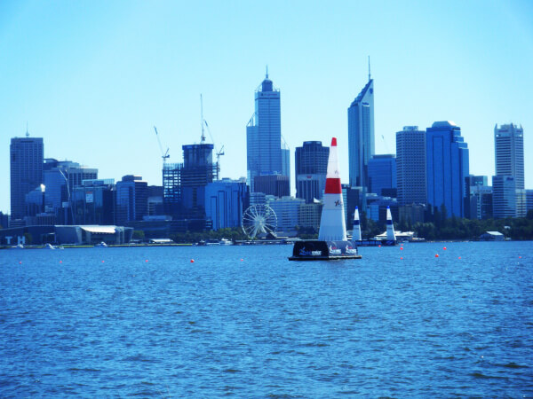
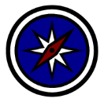
A look back at my adventure in Australia in 2009
Landed in Perth and started my jopurney, starting a new chapter far from home.

I went kayaking on the Swan River with my beautiful friends Leone and Kyeli.
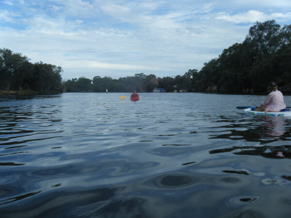
Celebrated New Year’s Eve at an energetic live show of the Queen of Electro, Luciana, in Perth.
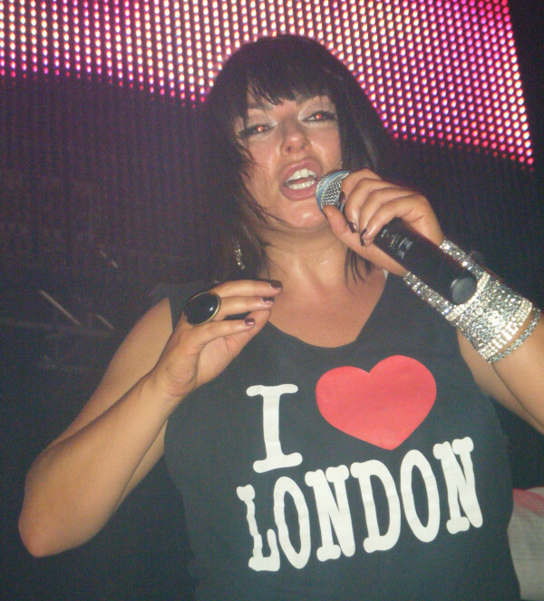
Celebrated Australia Day at Kings Park, enjoying the festive atmosphere and beautiful views of the city.
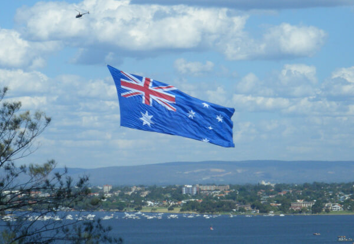
Visited the famous Cottesloe Beach and experienced one of the most iconic coastal spots in Western Australia.
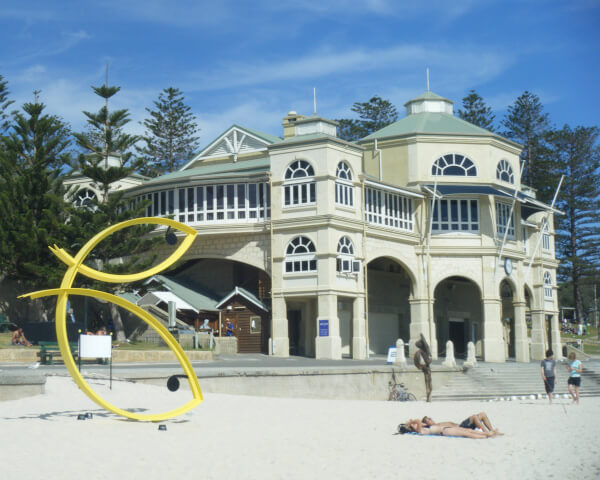
Attended an unforgettable Lady Gaga concert at the Burswood Dome during her Monster Ball Tour in Australia.
Went camping at Lancelin Beach with friends, enjoying nature, sand dunes, and the ocean.
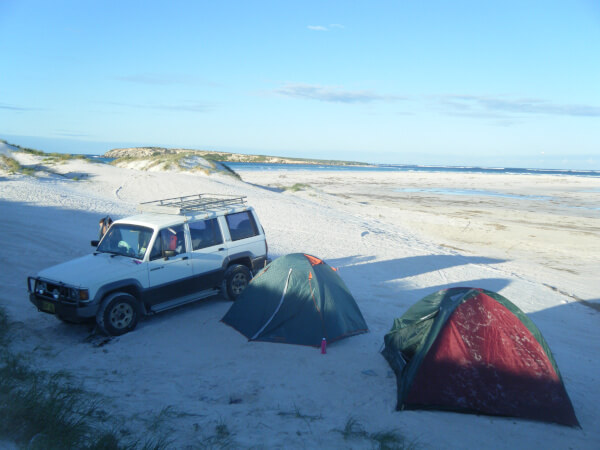
Spent the day at Hillarys Boat Harbour with my friend Valentine. We visited shops, restaurants and enjoyed the AQWA - The Aquarium of Western Australia.
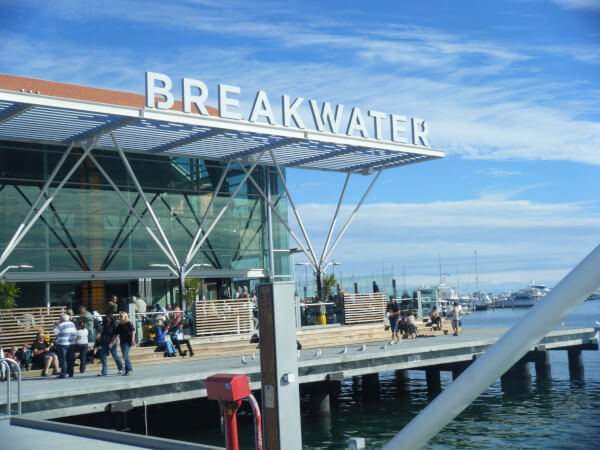
Took a boat trip from Perth to a nearby island, where we encountered a stranded whale. A unique and unforgettable experience.
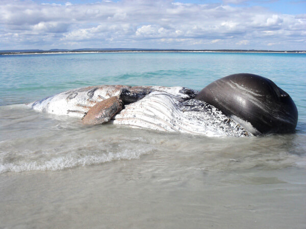
Visited Sandalford Wines with friends, enjoying wine tasting and the beautiful vineyard scenery.
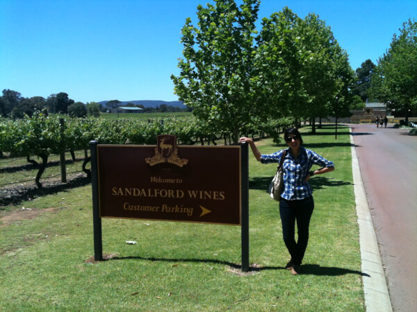
Traveled with friends to Denmark, Western Australia, staying in a cabin surrounded by nature. Also visited places such as:
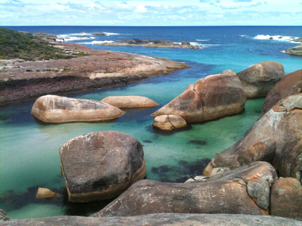
Celebrated my farewell party on December 11th, marking the end of an incredible chapter in Australia.
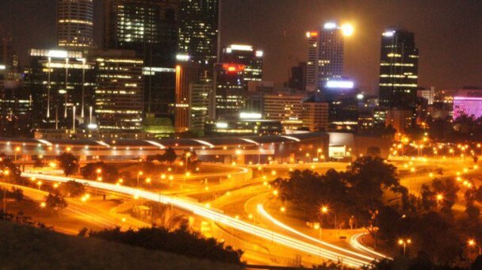